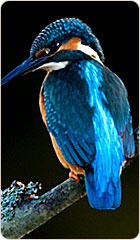
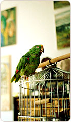

¿Cómo podemos ayudar a tu mascota?
Conoce los cuidados importantes para perros, gatos y otros animales de compañía. La prevención, la higiene, la buena alimentación y las revisiones veterinarias ayudan a proteger su bienestar.
-
Consulta veterinaria
Las revisiones profesionales permiten evaluar la salud de tu mascota y detectar problemas que necesitan atención. Consulta con un veterinario cuando lo necesites.
-
Atención para gatos
Aprende sobre la alimentación, la higiene y los cuidados que ayudan a mantener a tu gato saludable, activo y feliz.
-
Vacunación y prevención
Consulta con un profesional sobre las vacunas, desparasitaciones y revisiones preventivas adecuadas para la edad de tu mascota.
-
Cuidado de otros animales
Los peces y otros animales de compañía necesitan un ambiente limpio, alimentación apropiada y condiciones adecuadas para su bienestar.
-

Orientación sobre aves
Infórmate sobre la alimentación, la higiene y el espacio que necesitan las aves domésticas para mantenerse sanas.
-

Higiene y bienestar
Mantén limpios los espacios, las camas y los recipientes de tus mascotas. Un entorno seguro contribuye a su bienestar diario.
Consejos para cuidar a tu mascota
- Proporciona agua limpia y alimento adecuado.
- Mantén al día sus vacunas y revisiones veterinarias.
- Limpia regularmente su cama y sus recipientes.
- Dedica tiempo al juego, al ejercicio y al cariño.
- Ofrécele un espacio seguro y cómodo para descansar.
- Consulta con un veterinario ante cambios en su salud.
¡Tu mascota merece lo mejor!
¿Necesitas más información sobre el cuidado de tus animales? Visita nuestra página de contacto para conocer más.
Contáctanos Volver al inicio